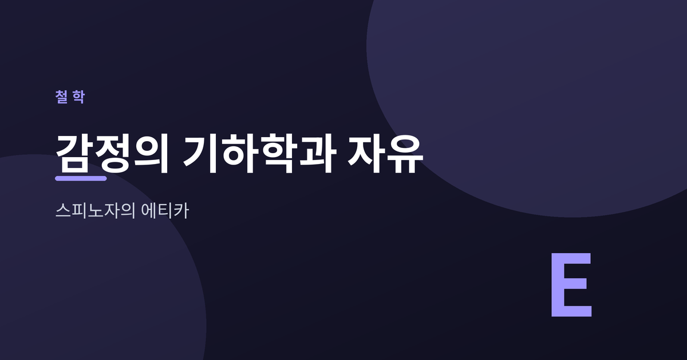

감정의 기하학과 자유

감정은 다스릴 수 없는 것일까요. 스피노자는 다르게 답했습니다. 그는 감정을 삼각형의 성질처럼 차분히 논증할 수 있다고 보았습니다. 그의 주저 『에티카』가 걸어간 길을 따라가 보겠습니다.
스피노자는 1632년 암스테르담에서 태어났습니다. 포르투갈계 유대인 가문 출신입니다. 스물세 살에 유대 공동체로부터 파문당했고, 렌즈를 갈며 홀로 사유했습니다.
그가 남긴 『에티카』의 원제는 "기하학적 순서로 증명된 윤리학"입니다. 유클리드의 『원론』처럼 정의와 공리에서 출발합니다. 거기서 정리를 하나씩 연역합니다. 사랑과 미움, 자유와 예속까지 논증의 사슬로 다룹니다. 감정을 감상이 아니라 구조로 바라본 시도입니다.
『에티카』의 첫 부는 신을 다룹니다. 다만 스피노자의 신은 인격적 창조주가 아닙니다.
그의 신은 자기 자신을 원인으로 삼는 무한한 유일 실체입니다. 존재하는 실체는 오직 하나뿐입니다. 그는 이를 "신 즉 자연(Deus sive Natura)"이라 불렀습니다. 인간과 사물은 이 하나의 실체가 드러난 양태입니다. 만물은 신의 본성에서 필연적으로 따라 나옵니다. 이 대담한 범신론은 이후 오랜 논쟁을 불러왔습니다.
스피노자에게 모든 것에는 자기 존재를 이어가려는 힘이 있습니다. 그는 이를 코나투스라 불렀습니다. 감정은 이 힘의 증감으로 설명됩니다.
원초적인 감정은 셋입니다. 욕망, 기쁨, 슬픔입니다. 기쁨은 더 큰 완전성으로 옮겨 가는 것입니다. 코나투스가 커지는 방향입니다. 슬픔은 그 반대입니다. 욕망은 존속하려는 노력이 의식된 것입니다. 수많은 정서가 이 셋에서 갈라져 나옵니다.
여기서 중요한 구분이 나옵니다. 외부 원인에 휘둘려 겪는 감정은 수동, 곧 정념입니다. 자기 본성에서 비롯된 감정은 능동입니다. 정신이 능동적일수록 우리는 덜 휘둘립니다.
『에티카』의 후반부는 예속을 진단합니다. 예속이란 부적합한 관념에서 비롯된 정념에 지배되는 상태입니다. 외부의 힘과 감정의 동요에 끌려다니는 삶입니다.
벗어나는 길은 억압이 아닙니다. 이해입니다. 감정을 명석하게 인식하는 순간, 그것은 더 이상 수동이기를 그칩니다. 스피노자가 제시한 최고선은 신 또는 자연에 대한 지적인 사랑입니다. 사물을 영원의 상 아래에서 바라보는 앎입니다. 그 앎 속에서 지복이 찾아옵니다. 그에게 지복은 덕의 보상이 아니라 덕 그 자체였습니다.
감정은 극복의 대상이 아니라 이해의 대상이었습니다. 스피노자는 그 이해를 자유의 다른 이름으로 삼았습니다.
— 자유는 감정을 없애는 데 있지 않고, 감정을 아는 데 있습니다.
오늘의 흔들리는 마음도, 어쩌면 조용히 들여다보는 일부터 시작될지 모릅니다.